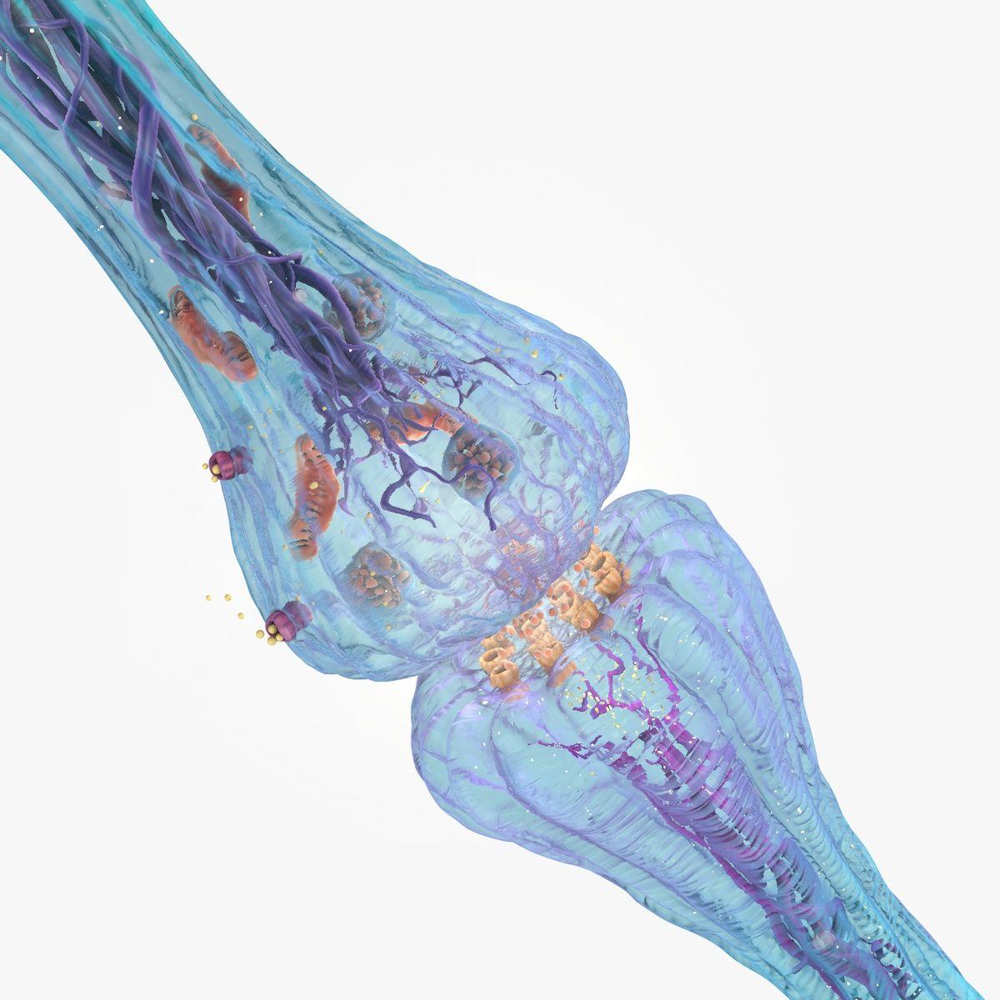

Evidence of practice.
An integrated profile across cognitive neuroscience, computational psychiatry, consciousness science, human-centred AI, and philosophy of mind and cognitive science.
ALI BASELIZADEH / CV
Researcher in cognitive neuroscience, computational psychiatry, consciousness science & philosophy.
Milan, Italy · ali.baselizadeh@studenti.unimi.it · ORCID 0009-0008-0918-763X

OWN ARCHIVE
EDUCATION
M.Sc., Human-Centered Artificial Intelligence
University of Milan · Dec 2025—Present · Neuro-AI curriculum
M.Sc., Philosophy of Science
Amirkabir University of Technology · 2016 · final grade 17/20
B.Sc., Electrical Engineering
K. N. Toosi University of Technology · 2013
Pre-university diploma
Mathematics and Physics · Iran · 2007
SELECTED SKILLS
SELECTED PROJECTS
Resting-state EEG complexity in schizophrenia
Three-cohort replication and data-integrity audit using Lempel–Ziv complexity, permutation entropy, and the aperiodic spectral exponent.
Is the human explorer a Kalman filter?
Bayesian reanalysis of open exploration data with hierarchical PyMC models, PSIS-LOO, and recovery analyses.
Distal sensitivity and the mark of the noncognitive
Philosophy of cognitive science project using control theory, state estimation, engineered estimators, and bacterial memory.
Whose Inference?
Predictive-processing review and multi-agent simulation of public inference in Zar rituals.
WRITING / EVIDENCE
Publication under review
Shahkarami et al., BMC Geriatrics; literature review and manuscript drafting.
Evidence synthesis
TMS–EEG complexity, sleep-related TMS plasticity, respiratory interoception, metacognition, and bodily self-consciousness.
Translation
Persian translation of Computational Psychiatry: A Primer by Peggy Seriès, MIT Press.
Interdisciplinary methods combine reproducible neurodata analysis, Bayesian modelling, evidence synthesis, and philosophical analysis.
↗